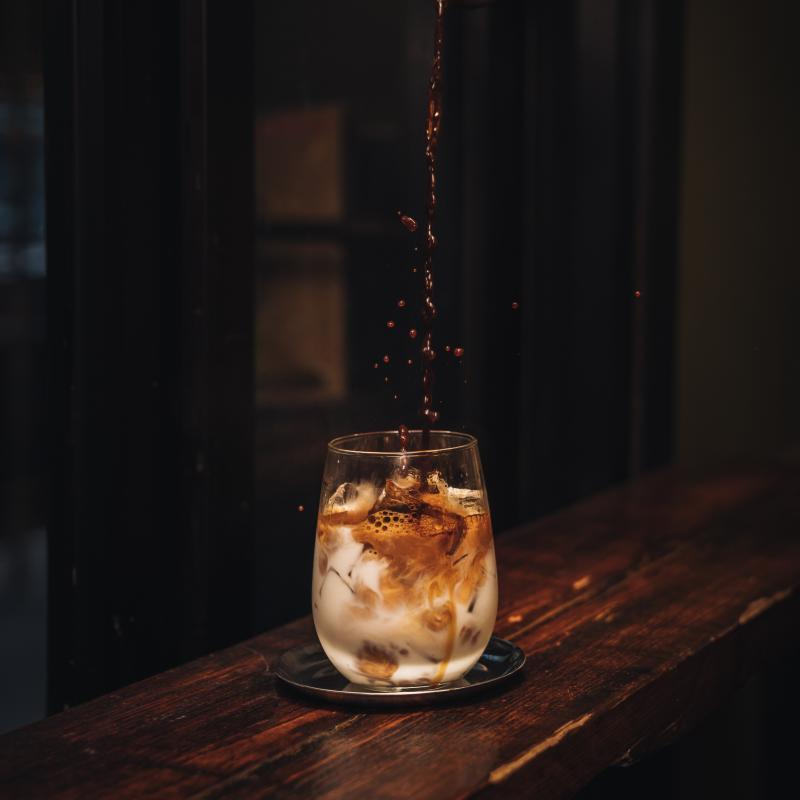
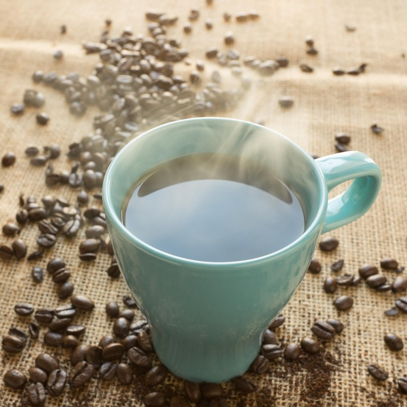
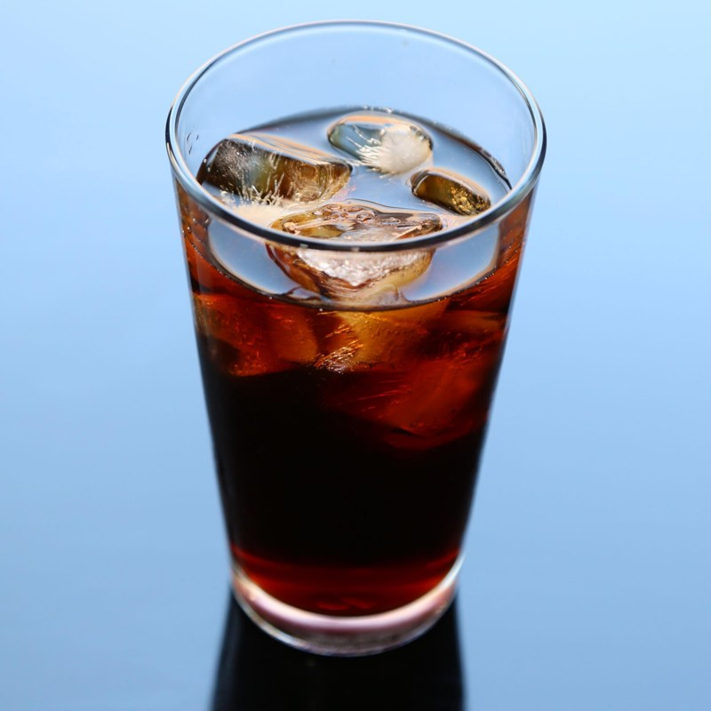
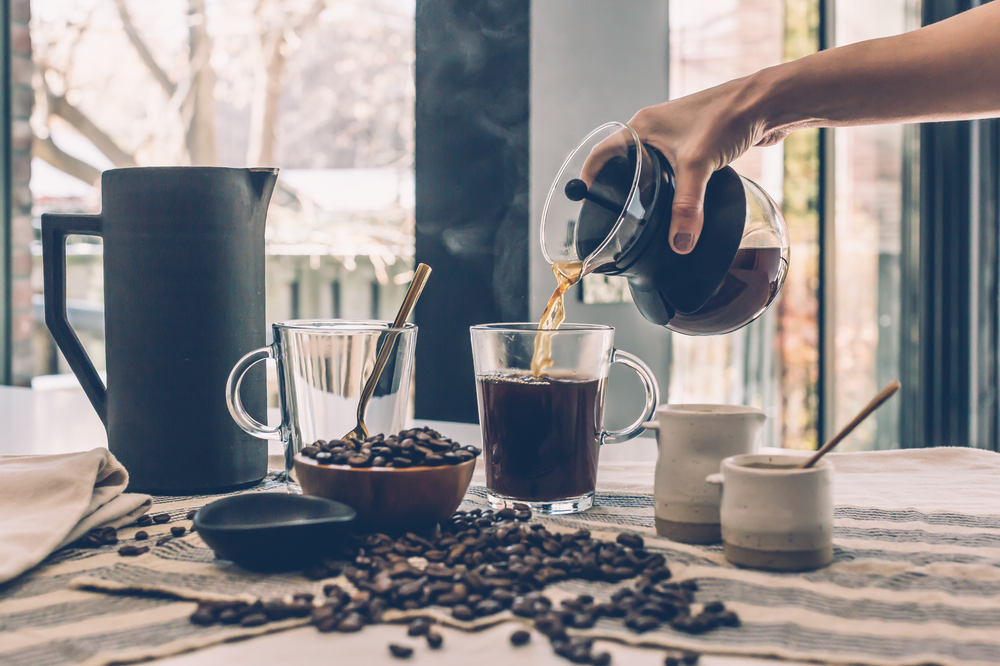
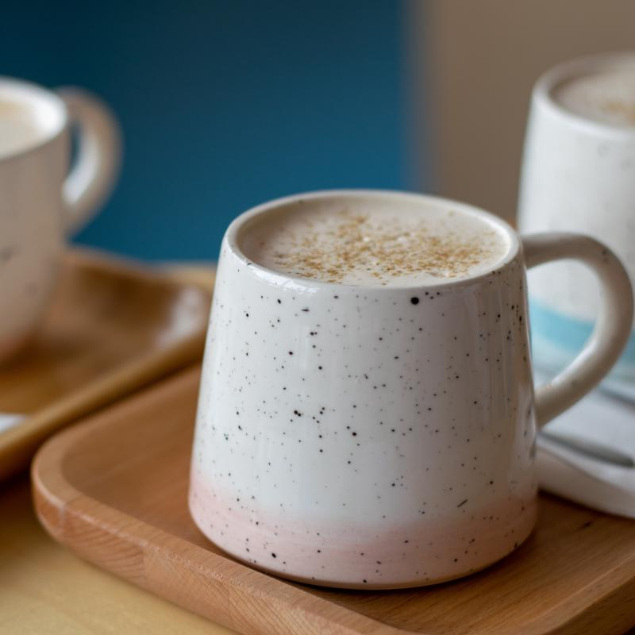
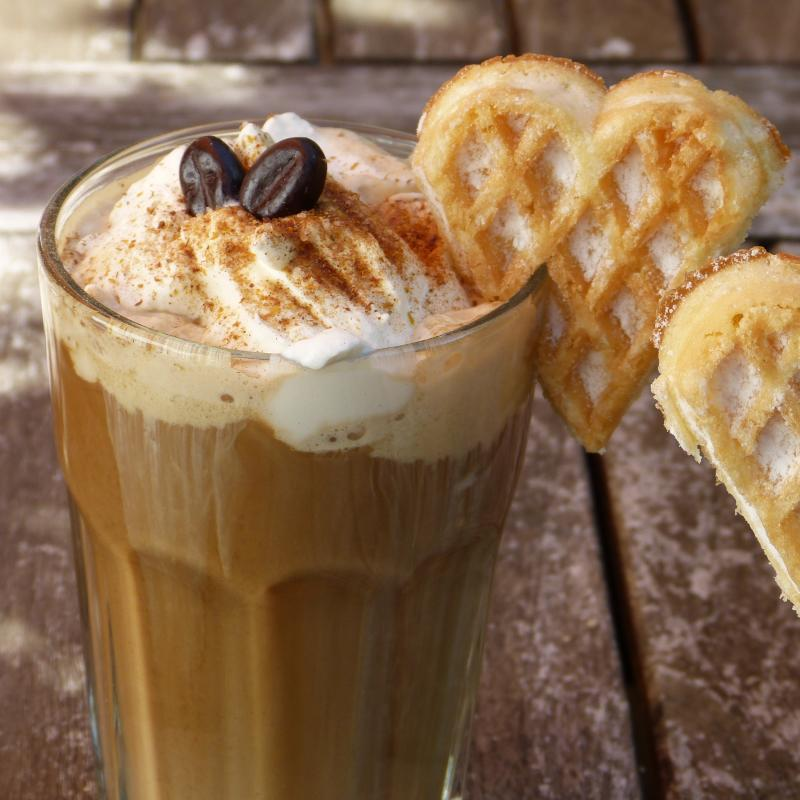

Tradisional
Kopi Tubruk
Diseduh langsung dengan bubuk kasar, cara lama yang menjaga rasa kopi tetap kuat dan pekat.
Pilih produk sesuai kebutuhan seduh harian, kantor, atau hadiah.
Tradisional
Diseduh langsung dengan bubuk kasar, cara lama yang menjaga rasa kopi tetap kuat dan pekat.
Menyegarkan
Kopi dingin dengan manis aren alami, pas untuk menemani siang yang panas di Pekalongan.
Karismatik
Diseduh perlahan satu per satu, memunculkan karakter rasa yang lebih halus dan personal.
Creamy
Espresso dipadukan susu dan sirup signature, untuk yang suka rasa manis dan lembut di lidah.


Rasa klasik dengan aroma kuat untuk teman memulai hari.
Rp45.000

Minuman kopi dingin dengan manis aren yang seimbang.
Rp22.000

Diseduh langsung saat dipesan, jadi rasanya selalu segar.
Rp25.000
Perpaduan espresso, susu lembut, dan karamel asin yang seimbang.
Rp32.000

Espresso segar dituang langsung di atas susu dingin, tampilan dan rasanya khas.
Rp40.000

Latte manis dengan sentuhan butterscotch dan topping whipped cream lembut.
Rp28.000
| Produk | Ukuran | Harga |
|---|---|---|
| Kopi Tubruk Signature | 250 gram | Rp45.000 |
| Cold Brew Aren | Botol 250 ml | Rp22.000 |
| Manual Brew V60 | Gelas 200 ml | Rp25.000 |
| Salted Caramel Latte | Gelas 250 ml | Rp32.000 |
| Dirty Latte | Gelas 200 ml | Rp40.000 |
| Butterscotch Latte | Gelas 250 ml | Rp28.000 |